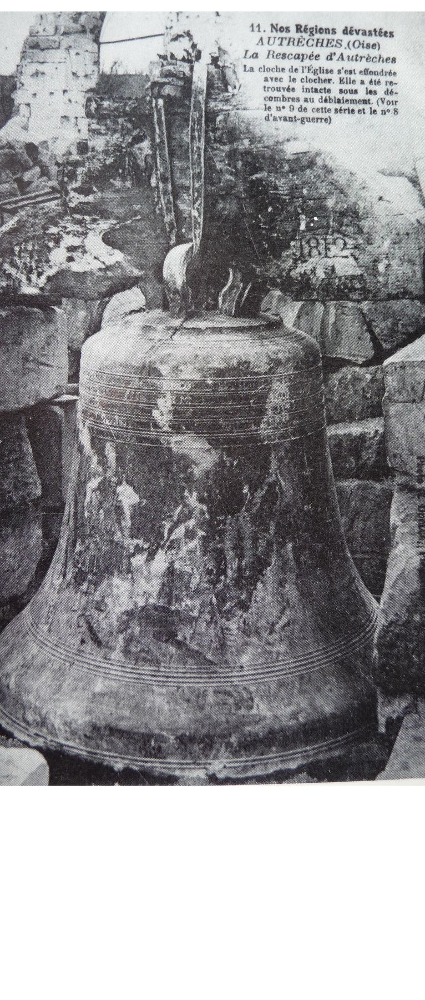
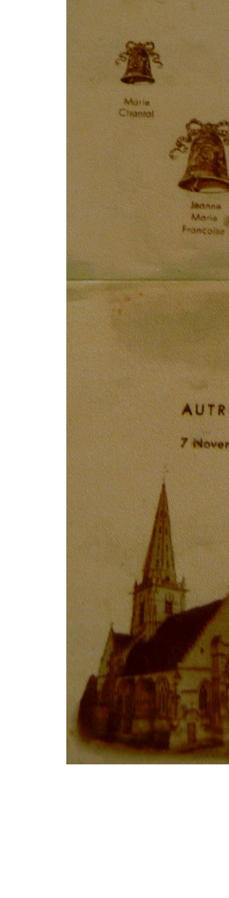
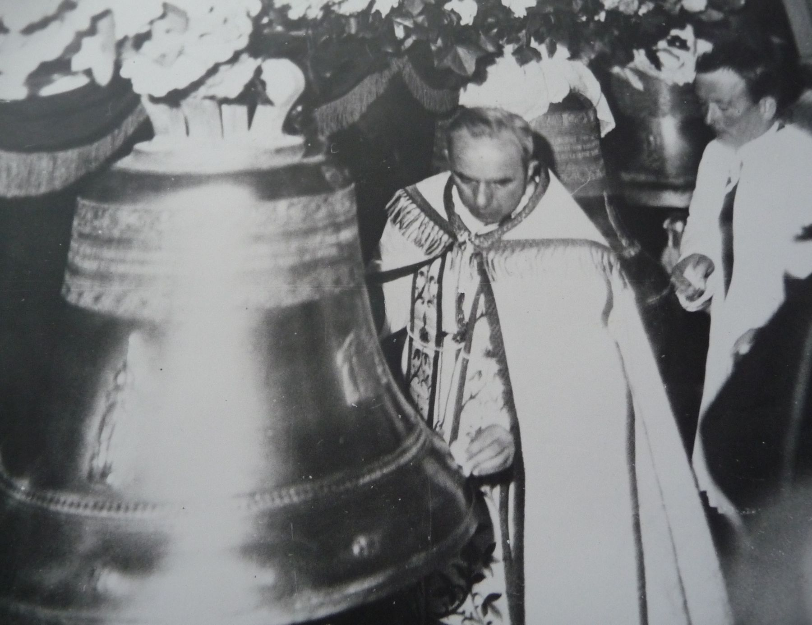

d’après la presse et les souvenirs d’une petite marraine
La première bénédiction dont on ait trace date de 1662 et concerne la cloche dénommée
« Louise-Anne »

Louise-Anne avait un diamètre de 112 cm, était haute de 96 cm et pesait 900 kg..
Elle perdit ses deux sœurs avec lesquelles elle formait un accord harmonieux à la Révolution, lorsque celles-ci furent envoyées à la fonte .
Louise-Anne fut retrouvée en 1918 dans les ruines du clocher. Elle paraissait miraculeusement indemne, hélas, fêlée elle due être fondue .
Autrêches retrouva son église et ses cloches en 1937.
• Le Progrès de l’Oise du 13 novembre 1937 rend ainsi compte du baptême des cloches et de la bénédiction de l’église reconstruite .
La cérémonie fut particulièrement émouvante : jamais pareille solennité n’avait été vue à Autrêches où régnait la joie de voir un village tant éprouvé par la guerre renaître à la vie au son de ses cloches .

Plus de 2.500 visiteurs accoururent des divers points du canton d’Attichy, du Soissonnais, des régions de Compiègne, de Noyon et au-delà, amenés par de nombreux cars et près de 200 autos .
Après la réception de Monseigneur Roeder, évêque de Beauvais, à la baraque-église, la procession s’organisa en un cortège magnifique vers la nouvelle église . Des guirlandes de verdure et de fleurs, un superbe arc de triomphe augmentaient la beauté du décor .
Derrière le suisse, venaient les drapeaux des anciens combattants d’Autrêches, Nampcel, Trosly-Breuil, Hautefontaine ; la bannière de la société de Secours Mutuels d’Autrêches ; les nombreuses délégations ; ensuite, les jeunes filles et les fillettes en blanc, cinquante enfants de chœur, plus de vingt prêtres précédant Monseigneur Roeder qui s’avançait au chant du Benedictus entre les haies épaisses formées par les nombreux spectateurs .
Suivaient parrains et marraines, plusieurs membres du Conseil Municipal, les présidents et présidentes de l’Union Cantonale avec les membres du bureau.
A l’entrée de l’église, Louis Oger, parrain et conseiller paroissial, adresse à Monsieur Roeder d’aimables souhaits de bienvenue .
Albéric Lefèvre, adjoint au maire d’Autrêches, prit ensuite la parole, en termes empreints de courtoisie, pour la remise des clefs à l’évêque .
Au chant des prières liturgiques, c’est ensuite la bénédiction de l’édifice, à l’extérieur puis à l’intérieur.
Bientôt l’église est archicomble et de très nombreuses personnes ne peuvent y pénétrer .

Au cours de la cérémonie, les chants ont été exécutés à la perfection par la maitrise de Noyon sous la direction de Monsieur l’Abbé Savatier .
Les jeunes filles d’Autrêches, de Nampcel, de Moulin-sous-Touvent s’associant au chant des cantiques .
A la sortie, une abondante distribution de dragées a été faite par les parrains et les marraines .
Au retour à la baraque-église, les enfants ont adressé un compliment à l’évêque et, après lui avoir offert une photographie de l’église et une petite cloche, ont poussé un « vivat » en son honneur .
Au cours de son passage à Autrêches, Monseigneur Roeder a tenu à rendre visite à un grand malade, monsieur Cornet, alité depuis 8 ans .
L’évêque s’est également rendu au Monument aux Morts où il a déposé une gerbe .
Monseigneur Roeder a été reçu à la Mairie de la façon la plus courtoise, par Monsieur le Maire, les membres du Conseil Municipal et du bureau de bienfaisance .


Cette entrevue a dignement complété le caractère de cette belle et inoubliable journée en marquant que sur le terrain commun il y a place pour une confiance mutuelle dans le respect des consciences, l’amour de la paix et de la concorde .

• Souvenirs recueillis par Rémi Hébert d’Henriette Lefevre, marraine de la cloche « Henriette –Marie » et dont le parrain fut Pierre Lefevre..
« Les parrains et les marraines avaient été choisis plusieurs années avant la cérémonie. A ce moment, je ne connaissais pas le parrain qui m’était destiné et qui devint mon mari . Le 7 novembre nous étions jeunes mariés …
Madame Le Pierre devait être la marraine de la deuxième cloche. Récemment décédée elle fut remplacée par mademoiselle Béatrice Foulloy qui s’occupait beaucoup de l’église et des catéchismes . Le parrain était Louis Lefevre . Cette cloche chante la paix en souvenir des morts de la Grande Guerre .
A cette époque on disait les messes et on se réunissait dans une baraque en planches qui se trouvait à Autrêches au croisement de la rue de la Horse et de la route de Chevillecourt . On était resté près de 20 ans sans église.
Je me souviens que « ma cloche » était habillée de satin bleu orné de dentelle ; je n’avais pas pu m’habiller de la même couleur car ma grand-mère venait de mourir.
Après la cérémonie, nous sommes descendus en procession au Monument aux Morts puis à la mairie où le champagne était offert aux autorités et aux parrains et marraines.
Comme on le voit sur la photo, les demoiselles portaient leur voile de première communion . C’était l’usage de cette époque, lors des fêtes où il y avait une procession . Parmi les enfants de chœur qui entourent Monseigneur Roeder, je reconnais Camille et André Idée, Abel Sivé et Adrien Lefevre. Je me souviens encore qu’à la Mairie, j’étais furieuse car quelqu’un m’avait subtilisé ma coupe de champagne… ».